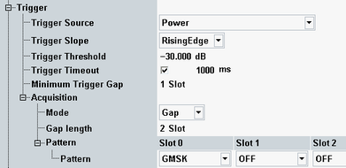

The trigger parameters configure the trigger system for the GSM multi-evaluation measurement.

Selects the source of the trigger event. Some of the trigger sources require additional options.
- Free Run:
The measurement starts immediately after it is initiated; no trigger is used. The remaining trigger settings are not relevant for "Free Run" measurements. - Power:
The measurement is triggered by the power ramp of the received signal. The trigger event coincides with the rising or falling edge of the detected GSM burst. Use this trigger source for single-slot measurements and for unique events such as the access burst transmitted during the connection setup. - Acquisition:
The R&S CMW analyzes the RF input signal and derives a frame trigger using information about the active slots (see "Mode" settings). Use this trigger source for multislot measurements, in particular those measurements with repeated burst patterns. The "Acquisition (Internal") trigger algorithm can cope with several active slots with possibly different burst powers and modulation types. It is even appropriate for continuous signals with no power ramps.
Refer also to the application sheet "Detecting GSM Multislot Frames".
After frame detection, the acquisition trigger events are repeated periodically according to the GSM frame clock. TSC detection is performed continuously to compensate for a possible drift. - ...External...:
External trigger signal fed in via the rear panel of the instrument. - ...Cont.10ms Trigger:
Continuous trigger signal with a trigger pulse every 10 ms. - Additional trigger modes:
Other firmware applications, e.g. the GSM signaling application (option R&S CMW-KS200) or the GPRF generator can provide additional trigger modes. Refer to the documentation of the corresponding firmware application for a description of these trigger modes.
Qualifies whether the trigger event is generated at the rising or at the falling edge of the trigger pulse. This setting has no influence on "Free Run" measurements and for evaluation of trigger pulses provided by other firmware applications.
Defines the input signal power where the trigger condition is satisfied and a trigger event is generated. The trigger threshold is valid for power trigger sources. It is a dB value, relative to the reference level minus the external attenuation ("<Ref. Level> – <External Attenuation (Input)> – <Frequency Dependent External Attenuation>"). If the reference level equals the maximum output power of the DUT and the external attenuation settings are correct, the trigger threshold is relative to the maximum input power.
A low threshold can be required to ensure that the R&S CMW can always detect the input signal. A higher threshold can prevent unintended trigger events.
Sets a time after which an initiated measurement must have received a trigger event. If no trigger event is received, a trigger timeout is indicated in manual operation mode. In remote control mode, the measurement is automatically stopped. The parameter can be disabled so that no timeout occurs.
This setting has no influence on "Free Run" measurements.
Defines a minimum duration of the power-down periods (gaps) between two triggered power pulses. This setting is valid for an "(IF) Power" trigger source.
- At the IF power-down ramp of each triggered or untriggered pulse, even if the previous counter has not yet elapsed. A power-down ramp is detected when the signal power falls below the trigger threshold.
- At the beginning of each measurement. The minimum gap defines the minimum time between the start of the measurement and the first trigger event.
The trigger system is rearmed when the timer has reached the specified minimum gap.

In the GSM multi-evaluation measurement, the "Minimum Trigger Gap" separates any two consecutive measurements by a minimum number of timeslots.
Remote command:The following parameters apply to the acquisition settings.
Selects the synchronization method that the R&S CMW uses to derive the frame boundary of the received UL signal and generate the "Acquisition (Internal") trigger events.
- Gap: The R&S CMW searches for a gap, i.e. for a series of 1 to 3 inactive slots. The trigger event is generated at the beginning of the first slot after the gap and repeated according to the GSM frame clock. Use this simple synchronization method for frames that start with a series of active slots and end with inactive slots.
- Pattern: The R&S CMW searches for a definite burst pattern, defined via "Acquisition > Pattern". The trigger events are generated at the beginning of the pattern and repeated according to the GSM frame clock, even though the true burst pattern has possibly changed. Use this synchronization method for arbitrary multislot configurations.
Number of consecutive inactive slots preceding the frame boundary (and therefore the acquisition trigger event).
Remote command: